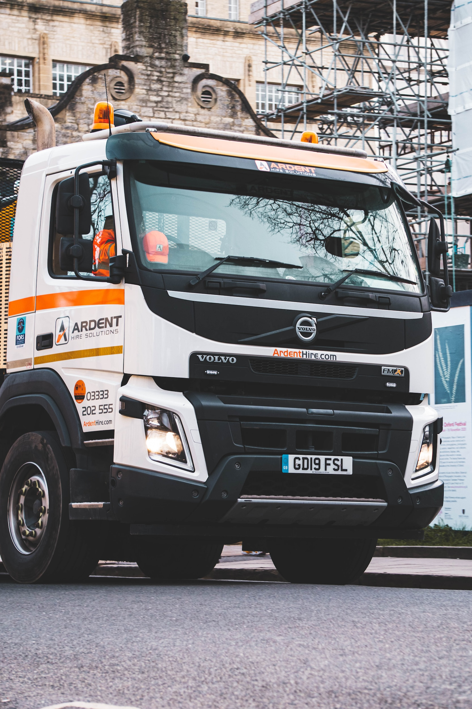

Liveasy
What is the need of Logistic for Business?

Need of Logistic for Business
01 INTRODUCTION
Logistics centers on the movement of goods, but its effects extend much further. In business, success in logistics translates to increased efficiencies, lower costs, higher production rates, better inventory control, smarter use of warehouse space, increased customer and supplier satisfaction, and an improved customer experienceThe very essence of a business is to exchange goods or services for money or trade.
02 CONTENT
Logistics is the path those goods and services take to complete the transactions. Sometimes goods are moved in bulk, such as raw goods to a manufacturer. And sometimes goods are moved as individual disbursements, one customer at a time.


02.1 How Logistic Industry works in Business?
As we all know that logistic industry is a backbone of an economy and still in India logistic industry is one of the most unorganised industry due to which many businesses as well as individuals are suffering in finding proper logistics for their (load) businesses and even if they did find out the right vehicles\logistic for their load there's still a problem wheather the driver would go to the destination or not where you need to get your load and even if driver would agreed to go to the destination and there is a still problem in tracking them as there can be chances that driver would say that he\she is reaching to the destination in 5 min but actual time would be 2 hours.

02.2 LIVEASY
Then we thought as we(INDIA) is moving towards Digitalisation why not Logistic industry should also move towards Digitalisation
And So we(LIVEASY) were born. LIVEASY = your one step solution for all of your logistics.
Now, book any vehicle as per your requirement in just one click and you can even track the vehicle you have booked for your load through LIVEASY GPS. We work in PAN INDIA because of which you can make your goods available to any part of India. You can even schedule your Booking for the near future. Now you don’t need to worry about the movement of your goods as LIVEASY is here to rescue you.
02.2 Importance of Logistics App in Turucking Industry
Trucking and logistics apps have the potential to make the trucking industry more efficient than ever by meeting consumer demands for packaging services straight with the source. It eliminates the requirement of a middleman between shippers and truckers while optimizing associated expense and time taken to deliver and receive packages. In a nutshell, an intuitive truck dispatch software brings an advanced freight management solution to streamline logistics and improve overall efficiency for shippers, drivers, and carriers. It caters to trucking & logistics businesses and startups to bring automation and scalability to their operations.
03 CONCLUSION
In conclusion, No matter the particulars, logistics is the physical fulfillment of a transaction and as such is the life of the business. Where there is no movement of goods or services, there are no transactions—and no profits.Each of these factors can significantly move the needle on a company’s success.